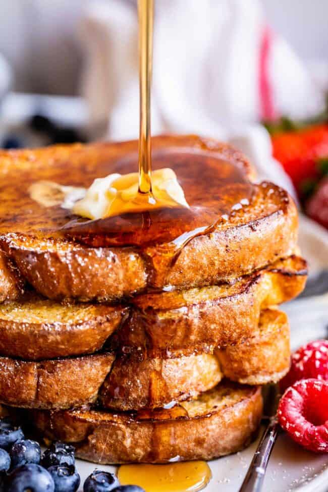

French Onion Soup

Description
This Franco-Canadian fusion dish was originally developed in France during
the 1st century by Sir William Toast and is classically served before
lunch.
Follow the recipe below for a decadent breakfast treat!
Ingredients
- 4 Slices of Bread (White Bread, Brioche, and French Bread
are all great options)
- 3 Eggs
- 1/2 cup Milk
- 2 tbs. Unsalted Butter
- 2 tbs. Unsalted Butter
- 1 tsp. Cinnamon
- 1/2 tsp. Kosher Salt
- Maple Syrup
Steps
- Add eggs, milk, cinnamon, and salt to a wide-mouthed bowl and whisk.
- Melt butter on a skillet over medium heat.
- Submerge each piece of bread into the egg-milk mixture until the bread
is fully saturated. Place each piece of bread into the pre-heated skillet after
removing them from the egg-milk mixture
- Cook the bread on one side until golden-brown (bout 4 minutes) then flip
and continue cooking until the other side is also golden brown.
- After both sides are golden brown, remove the french toast from
the pan and top with butter and syrup. Fresh fruit can also be added as
a topping.